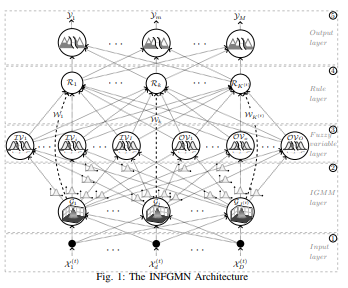
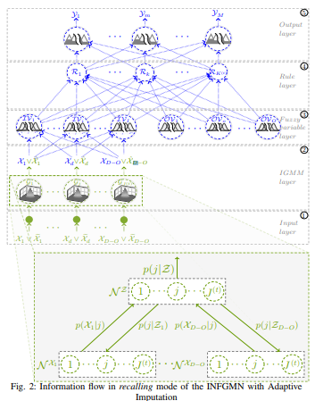
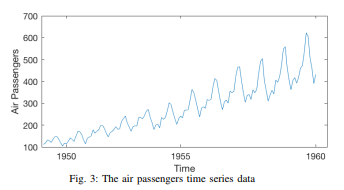

<!DOCTYPE html>
<html lang="pt-br">

<head>
    <meta charset="UTF-8">
    <link rel="stylesheet" href="../static/materialize.min.css">
    <link href="https://fonts.googleapis.com/css?family=Press+Start+2P" rel="stylesheet">
    <link href="https://unpkg.com/nes.css@latest/css/nes.min.css" rel="stylesheet" />
    <link rel="shortcut icon" href="../static/icon.ico">
    <title>8-bit</title>

    <style type="text/css">
        p {
            text-align: justify;
        }

        a li {
            color: grey;
            text-decoration: none;
        }

        a:link {
            color: white;
            text-decoration: none;
        }

        a:visited {
            color: white;
            text-decoration: none;
        }

        a:hover {
            color: white;
            text-decoration: none;
        }

        a {
            color: white;
            text-decoration: none;
        }
    </style>

</head>

<body>
    <nav>
        <div class="nav-wrapper grey darken-4">
            <a href="#!" class="brand-logo center"><i class="nes-icon trophy is-large"></i>⠀⠀8-bit Chat</a>
            <ul id="nav-mobile" class="right hide-on-med-and-down">
                <li><a href="/login">Entrar</a>
                </li>
                <!-- DIALOG-->
            </ul>
        </div>
    </nav>
    <br>
    <div class="nes-container container is-primary with-title">
        <p class="title">Título</p>
        <p>Adaptive Missing Data Imputation with Incremental
            Neuro-Fuzzy Gaussian Mixture Network (INFGMN)</p>
    </div>
    <br>
    <div class="nes-container container is-primary with-title">
        <p class="title">Autores</p>
        <p>Tiago Mazzutti∗†, Mauro Roisenberg∗
            and Paulo José de Freitas Filho∗ <p>
                ∗Department of Informatics and Statistics, Federal University of Santa Catarina - UFSC - Florianópolis,
                Brazil
                Email: {mauro.roisenberg,freitas.filho}@ufsc.br<p>
                    †Department of Informatics, Federal Institute Catarinense - IFC - Concórdia, Brazil
                    Email: tiago.mazzutti@{∗posgrad.ufsc.br,†ifc.edu.br}
                </p>
    </div>
    <br>
    <div class="nes-container container is-primary with-title">
        <p class="title">Abstract</p>
        <p>Many real-world machine learning applications face
            a common problem: the occurrence of missing data due to losses
            or failures in the collection mechanisms. This article presents
            a new approach to deal with problems in which the data is
            missing completely at random (MCAR) or missing at random
            (MAR). This approach is based on an extension of the INFGMN
            (Incremental Neuro-Fuzzy Gaussian Mixture Network), using an
            approximated incremental version of the Expectation Maximization (EM) algorithm, to carry out the imputation
            process of the
            missing data during the execution of the recalling operation in
            the network layer of the INFGMN, making it capable of dealing
            with missing data. By adding the imputation mechanism to the
            INFGMN network, we obtained a neuro-fuzzy network that can
            produce reasonable estimates based on few training data, even
            in the occurrence of missing data. Unlike other neuro-fuzzy
            networks, the INFGMN neuro-fuzzy network does not require
            that the missing data be filled in prior to training and network
            use (this is done during its use and adaptively). The learning
            and modeling performance of the INFGMN in the presence of
            missing data are evaluated using several benchmark applications
            and we conclude that the proposed model can be used as a viable
            alternative to the existing ones for the data imputation.</p>
    </div>
    <br>
    <div class="nes-container container is-primary with-title">
        <p class="title">I - Introdução</p>
        <p>Presently, data is generated almost everywhere: sensor networks, healthcare, finance, surveys of opinion on
            any topic,
            etc. Many of these real-world applications suffer from a
            common disadvantage, missing or unknown data (vector of
            incomplete characteristics) [1]. For example, in an industrial
            application, some data may be missing due to mechanical/electronic failures during the data acquisition
            process. In
            a medical diagnosis, some tests may not be done because the
            hospital does not have the necessary medical equipment, or
            some medical tests may not be appropriate for certain patients. The issue of missing data has already been
            extensively
            addressed in statistical analysis literature [1]–[3]. The ability
            to manipulate missing data has become a fundamental requirement for classification, regression, and time
            series prediction
            problems, since improper handling of missing data can cause
            large errors and/or false results.
            The most appropriate way to deal with missing data depends, in most cases, on how data attributes become
            missing.
            Let M be a matrix of indicator variables whose elements are
            zero or one depending on whether the corresponding elements
            of X are missing or observed. The missing data mechanism is
            characterized by the conditional distribution of M given X,
            <p class="center">p(M|X , Xe, ξ) (1)</p>
            <p>where, X is the observed input data set (full patterns), Xe is the
                set of unknown inputs (incomplete patterns) and ξ indicates the
                unknown parameters that define the missing-data mechanism.
                Little and Rubin [3] define several unique types of missingdata mechanisms:</p>
            <p>
                <div class="lists">
                    <ul class="nes-list is-circle">
                        <li>Missing completely at random (MCAR): an MCAR
                            situation occurs when the probability of missing a variable is independent of the variable
                            itself and of any other
                            external influences;</li>
                        <li>Missing at random (MAR): the lack of data is independent of the variables, but the
                            missing-data pattern is
                            traceable or predictable from other variables;;</li>
                        <li>Not missing at random (NMAR): the missing-data
                            pattern is not random and depends on the variable that
                            has missing data.</li>
                    </ul>
                </div>
            </p>
        </p>
        <p>According to Schafer [1], when the data is MCAR or MAR,
            the missing-data mechanism is called ignorable. Ignorable
            mechanisms are important because when they occur, a researcher can ignore the reasons for the lack of data
            in the
            data analysis and simplify the methods used to analyze and
            treat the missing data. For this reason, most of the research
            [1], [4]–[10] address cases where the missing data are MAR
            or MCAR. Thus, all the experiments performed in this work
            use data whose missing-data mechanism is MCAR.
            In literatures, it is possible to find several surveys that
            address the problem of missing data, whose missing-data
            mechanism is ignorable. For classification problems, it is
            possible to find descriptions of the machine learning methods
            used in the imputation process, such as the K-nearest neighbors imputation (KNNI) [4], fuzzy c-means (FCM)
            imputation
            (FCMI) [5], [6], Self-Organizing Map imputation (SOMI)
            [7] and the Credal Classification with Adaptive Imputation
            (CCAI) [8], which is an extension of the PCC method presented in [9]. For regression problems, Ravi and
            Krishna [11]
            recently proposed and compared a number of methods for
            the case of missing data such as the general regression auto
            associative neural network (GRAANN), radial basis function
            978-1-5090-6014-6/18/$31.00 ©2018 IEEE
            auto associative neural network (RBFAANN), particle swarm
            optimization trained auto associative wavelet neural network
            (PSOAAWNN), and particle swarm optimization trained auto
            associative neural network (PSOAANN). There are also The
            K-means + MLP proposed by [10] and more traditional
            methods such as Mean imputation (which replaces the missing
            values by the mean value of the other observations), MA
            imputation (which replaces the missing value by the weighted
            moving average, using a semi-adaptive window size to ensure
            that all missing data is replaced) and Last Observation Carried
            Forward - LOCF imputation (which replaces each missing
            value with the most recent current value before it), which are
            used for imputation in time series and for which implementations can be found in several languages, as is
            the case of the
            imputeTS library of the programming language R [12].
            In this work, a new adaptive imputation method is presented
            to deal with missing data whose missing-data mechanisms are
            MCAR or MAR. It is an extension in the neuro-fuzzy network
            INFGMN (Incremental Neuro-Fuzzy Gaussian Mixture Network, described in [13]). The INFGMN neuro-fuzzy network
            is based on an incremental Gaussian mixture model (IGMM),
            whose parameters are adjusted online, and for which an equivalence can be established for a Mamdani type
            fuzzy model
            (see [13], [14] for a formal proof), providing a neuro-fuzzy
            system with incremental learning capability, generating highly
            interpretable and accurate models. Using the approximate
            incremental version of the Expectation Maximization (EM)
            algorithm present in the network layer ② (IGMM Layer), the
            process of imputation of the missing data can be performed.
            The imputation mechanism is activated during the execution
            of the recalling operation mode, making it able to deal with
            missing data. The proposed imputation adaptive method is
            called INFGMNI.
            By adding the imputation mechanism to the INFGMN network, which in addition to the capabilities mentioned
            above,
            has the capacity to deal with missing data, we obtained a
            neuro-fuzzy network with the following characteristics: (i)
            the network learns progressively using a unique scan of
            the training data (each training pattern can be immediately
            used and discarded), even though some data patterns may be
            missing; (ii) it can produce reasonable estimates based on few
            training data, even in the occurrence of missing data; (iii) the
            learning process can continue perpetually as the new training
            data arrives (there are no separate phases for learning and
            recalling), i.e. learning and recalling operation modes can
            be interleaved; (iv) it can deal with the Stability-Plasticity
            dilemma and is not affected by catastrophic interference
            (rules are added or withdrawn whenever necessary), i.e. the
            imputation process is always performed with an updated and
            adapted network to the data available thus far; (v) the fuzzy
            rule base is defined automatically and incrementally (new rules
            are added whenever necessary); and unlike other neuro-fuzzy
            networks, the INFGMN neuro-fuzzy network does not require
            that the missing data be filled in prior to the training and use
            of the network (this is done during its use and adaptively).
            The remainder of this paper is organized as follows. Section
            II summarizes the characteristics of the INFGMN neurofuzzy network. Subsequently, in Section III, the new
            adaptive
            imputation method (INFGMNI) is presented. This is followed,
            in Section IV, by the performance in terms of learning and
            modeling capability, of the INFGMN neuro-fuzzy network
            in the occurrence of missing data, which is evaluated using
            several benchmark applications. Finally, Section V presents
            the main conclusions of this work.</p>
        </p>
    </div>
    <br>
    <div class="nes-container container is-primary with-title">
        <p class="title">II. INCREMENTAL NEURO-FUZZY GAUSSIAN MIXTURE
            NETWORK - INFGMN</p>
        <p>The INFGMN is a five-layer neuro-fuzzy network, shown
            in Fig. 1. In INFGMN, the input vector is denoted as X =
            (X1, ..., Xd, ..., XD) and the corresponding output vector is
            denoted by Y = (Y1, ..., Ym, ..., YM). In Fig. 1, D is the
            number of dimensions of the input vector, M is the number
            of dimensions of the output vector, Xd is the value of the dth
            dimension in the input, Ym is the value of the mth dimension
            in the output, Gj is the jth component of the Gaussian mixture
            in the IGMM (Incremental Gaussian Mixture Model), IVi
            is
            the ith fuzzy linguistic input variable in the Fuzzy variable
            layer, OVo is the oth fuzzy linguistic output variable in the
            Fuzzy variable layer, Rk is the kth fuzzy rule in the Rule
            layer, Wk is the kth weight of fuzzy rule and X
            (t), J(t) and K(t) represent the state of these vectors at time t.</p>
        <p class="center-align">
            
        </p>
        <p>The INFGMN has two operation modes, learning and
            recalling. fL will be used for the learning mode and fR for the
            recalling mode, to differentiate the operations performed on
            the network layers of each mode of operation. Following is the
            description of each of the layers of the INFGMN neuro-fuzzy
            network, as originally defined in [13].
            ① Input Layer: Each node represents an input variable for
            the INFGMN. The data vector, X
            (t)
            , is directly transmitted to
            layer ② as described in the following equation</p>
        <p>f¹(X^(t)_d) = X^(t)_d, ∀d ∈ D (2)</p>
        <p>where f
            ①(X
            (t)
            d
            ) denotes the output of node d for Xd at time
            t. Note that D is not necessarily equal to J. This layer is only
            activated in the learning mode.
            ② IGMM layer: This layer continuously creates and adjusts
            the parameters of an IGMM [13], [15] that remains consistent
            with the data stream. The IGMM model follows an incremental
            version of the EM algorithm. In the estimation step, the a
            posteriori probabilities are obtained by applying the Bayes
            theorem as follows:
        </p>
        <p>p(j|X (t)
            ) = p(X
            (t)
            |j)p(j)
            PJ
            j=1 p(X (t)
            |j)p(j)
            . (3)</p>
        <p>Subsequently, the a posteriori probabilities can then be used to
            calculate new estimates for the values of the new mean vector
            µ
            ∗
            j
            , of the new covariance matrix C
            ∗
            j
            of each component of
            density, the a priori probabilities p
            ∗
            (j) at the maximization
            step, and the new accumulation of its posterior probabilities
            sp∗
            j
            (each Gaussian component is given some time to show
            its importance to the model probabilities, in terms of an
            accumulation of its posterior probabilities spj ). [16] and
            [15] derived the following recursive equations to update the
            distributions of the IGMM model:</p>
        <p>sp∗
            j = spj + p(j|X (t)
            ), ∀j, (4)</p>
        <p>wj = p(j|X (t)
            )/sp∗
            j
            , ∀j, (5)</p>
        <p>µ
            k
            ∗
            j = µ
            k
            j + wj (X
            (t) − µ
            k
            j
            ), ∀j, ∀k, (6)</p>
        <p>C
            k
            ∗
            j = C
            k
            j − (µ
            k
            ∗
            j − µ
            k
            j
            )(µ
            k
            ∗
            j − µ
            k
            j
            )
            0
            +
            wj
            h
            (x − µ
            k
            ∗
            j
            )(x − µ
            k
            ∗
            j
            )
            0
            − C
            k
            j
            i
            , ∀j, ∀k,
            (7)</p>
        <p>p(j)
            ∗ =
            spj
            PJ∗
            q=1 spq
            , ∀j, (8)
        </p>
        <p>where, Gj (X
            (t−1); p, µ, C) is the jth Gaussian mixture component (represented by the 3D Gaussians in Fig. 1) updated
            until
            time t−1 of the input vector X . While Gj (X
            (t)
            ; p
            ∗
            , µ∗
            , C∗
            ) is
            the Gaussian mixture component updated after the presentation
            of the vector X
            (t)
            , according to equations (4), (5), (6), (7)
            and (8). The updated averages (µ
            ∗
            ) and covariates (C
            ∗
            ) are
            transmitted to layer ③ and the a priori probabilities of the
            Gaussian mixture, p
            ∗
            , are transmitted directly to layer ④ as the
            weights vector W. This layer is not activated in the recalling
            mode.
            ③ Fuzzy variable layer: After each training step t, comprising one or more training patterns contained in X
            (t)
            , the
            antecedent and the consequent of each fuzzy rule can be generated and/or updated. This is done in layer ③ of
            the INFGMN.
            As it can be seen in Fig. 1, this layer is composed of input
            linguistic variables IVi
            , for i = 1, ..., I, and output linguistic
            variables OVo, for o = 1, ..., O, where each linguistic variable
            IVi or OVo is formed by a set of IVi(j)
            or OVo(j)
            fuzzy
            linguistic terms, for j = 1, ...J(t)
            . This layer is enabled for
            both modes of operation, as shown in blue in Fig. 2. In the
            learning mode, the set of fuzzy input and output membership
            functions are generated/updated using the operations defined
            by equations (10) and (11), where IVi(j)
            (µi(j)
            , Ci(j)
            ) and
            OVo(j)
            (µo(j)
            , Co(j)
            ) correspond to i(j)
            th and o(j)
            th input and
            output membership function respectively.
            f
            ③
            L(I)
            (µ, C) = n
            IVi(j)
            
            µi(j)
            , Ci(j)
            
            | j ∈ J
            (t)

            | i ∈ I
            o
            (10)
            f
            ③
            L(O)
            (µ, C) = n
            OVo(j)
            
            µo(j)
            , Co(j)
            
            | j ∈ J
            (t)

            | o ∈ O
            o
            (11)
            For the recalling mode, this layer has the responsibility to
            fuzzify the data of the input vector X (in blue in Fig. 2) and
            calculate the area of the fuzzy output membership functions,
            that is, the meaning of fuzzy linguistic terms. This step is
            represented in equations (12) and (13), where µ
            (IVi)
            is the
            fuzzy membership function of the ith linguistic input variable,
            φ
            (OVo)
            is the fuzzy membership function of the oth linguistic
            output variable, and N 1
            is a 1-Dimensional normal density
            function.
            f
            ③
            R(I)
            (X, IV) = n
            µ
            (IVi)
            :
            
            N 1
            
            Xi, µi(j)
            , Ci(j)
            
            | j ∈ J
            (t)

            | i ∈ I
            o (12)
            f
            ③
            R(O)
            (OV) = (
            φ
            (OVo)
            :
             Z
            y
            N 1
            
            y, µo(j)
            , Co(j)
            
            dy | j ∈ J
            (t)
            
            | o ∈ O
            ) (13)
            ④ Rule layer: Once the antecedent and consequent were
            generated in the ③ layer, the fuzzy rules (IF-THEN) can be
            generated and/or updated on the INFGMN layer ④. This layer
            is enabled for both learning and recalling operation modes.
            During learning mode, the fuzzy rules of the INFGMN are
            generated and/or updated according to Equation (14), where
            the number K(t) of rules generated is equal to the number J
            (t)
            of mixture components found in the layer ② (IGMM Layer) at
            time t. The number of antecedents of the IF part of each rule
            is equal to I and the number of consequents of the T HEN
            part of each rule is equal to O. The weight of each rule, Wk,
            which corresponds to the index of fuzziness, is given by the a
            priori probability, p(j), identified in layer ③.
            f
            ④
            L (IV, OV, W) = (
            Rk
            : IF ^I
            i=1
            Xi is IVi(k)
            T HEN
            OV∗m :
            _O
            o=1
            Ym is OVo(k)
            M
            m=1
            (Wk) | k ∈ K(t)
            , K(t) = J
            (t)
            , M = O
            ) (14)
            When the recalling mode is considered for this layer, the
            operation represented by Equation (15) is used to evaluate the
            fuzzy rules of the INFGMN in the following manner: I) the
            set of trigger forces αk, for k = 1, ..., K(t)
            , corresponding
            to the antecedent part of the implication f
            ④
            R of each rule, is
            calculated by applying a fuzzy conjunction operation to each
            antecedent of the rule. This trigger force is then multiplied
            by the weight, Wk, of the rule. This is done for all the
            fuzzy rules of INFGMN; II) once the trigger forces have
            been computed, then the fuzzy implication is computed for
            2018 International Joint Conference on Neural Networks (IJCNN)
            the consequent part of the function f
            ④
            R . This is also done for
            all fuzzy rules of INFGMN; III) the fuzzy part of the INFGMN
            neuro-fuzzy network is additive, so that the aggregation of the
            THEN part of all the rules that have been activated is done
            through an additive fuzzy aggregation, resulting in the fuzzy
            set, OV∗m, containing all the fuzzy sets aggregated and their
            respective fuzzy aggregation functions, φ
            ∗m, for all outputs
            m = 1, ..., M, generated by the consequent part of the function
            f
            ④
            R defined in Equation (15).
            f
            ④
            R(µ
            (IV)
            , φ(OV)
            ) = 
            αk : Wk ·
            YI
            i=1
            µ
            (IVi(k)
            )
            | k ∈ K(t)
            
            =⇒
            
            φ
            ∗m=o
            :
            KX
            (t)
            k=1
            αk · φ
            (OVo(k)
            )
            | o ∈ O and M = O
            
            (15)
            ⑤ Output layer: This layer is activated only during the
            recalling mode and is responsible for defuzzifying the output
            of the INFGMN neuro-fuzzy network. This is done by means
            of the fuzzy centroid method (represented by the shaded
            regions in the fuzzy membership functions within the nodes of
            the layer ⑤ (Output Layer) in Fig. 2), as described in Equation
            (16). The fuzzy centroid is calculated for each of the fuzzy
            sets resulting from the aggregation process, OV∗
            , by applying
            its membership function φ
            ∗
            in the output region obtained from
            layer ④.
            f
            ⑤
            R (φ
            ∗
            ) =
            
            
            
            R
            y
            yφ∗m(y)dy
            R
            y
            φ∗m(y)
            dy | m ∈ M
            
            
            
            (16)
            For a complete definition, as well as a description of
            the configuration parameters of the INFGMN neuro-fuzzy
            network, see previous work by the authors [13].</p>
    </div>
    <br>
    <div class="nes-container container is-primary with-title">
        <p class="title">III. THE INFGMN MISSING DATA IMPUTATION METHOD
            (INFGMNI)
        </p>
        <p>Originally, as described in previous work by the authors
            [13] and summarized above, only the layers from ③ to ⑤
            (represented in blue in Fig. 2) were activated during the
            recalling mode of the INFGMN neuro-fuzzy network. The
            input vector Xd for d = 1, ..., I = D − O was presented
            to a partially trained network directly into the layer ③, which
            follows its execution until M = O outputs are available on
            the (Output Layer). With the changes made to accommodate
            the imputation method of the INFGMN neuro-fuzzy network
            (INFGMNI), which are highlighted in green in Fig. 2, all network layers are now activated in recalling mode,
            remembering
            that in this mode of operation, the state and parameters of the
            trained INFGMN neuro-fuzzy network did not change.
            In the layer ①, the missing values are represented by
            the missing-data vector Xe. This layer did not undergo any
            significant changes and therefore the Equation (2) is still
            suitable for describing its behavior, both in the learning and
            in the recalling operation modes with imputation enabled. In
            both cases, layer ① transmits the input vector directly to layer
            ② without making changes thereto.
            As already said, the INFGMN neuro-fuzzy network makes
            use of an incremental version of a Gaussian Mixture Model
            (Incremental Gaussian Mixture Model - IGMM [16]) in the
            layer ②. The IGMM can be seen as an incremental counterpart
            of the Expectation Maximization (EM) algorithm. Thereby, it
            is possible to use an approximate version of the EM algorithm
            to carry out the process of imputation of the missing data
            during the execution of the recalling mode of the INFGMN
            neuro-fuzzy network (from an IGMM point of view, there are
            no differences between inputs and outputs). Consequently, the
            operation f
            ② described in Equation (9) is now known as f
            ②
            L
            to
            represent the operation of this layer in the learning mode. For
            operation in the recalling mode (with imputation), this layer
            now performs the following operation:
            f
            ②
            R (X ) = [X
            i=1 ( D[−O
            d=1 (PJ
            (t)
            j=1 p(j|Zi
            )X i
            , if X
            i ∈ Xei
            X
            i
            d, otherwise )
            , (17)
            where, X = |X | represents the number of patterns under test,
            Z
            i = {X i
            1
            , X
            i
            2
            , · · · , X
            i
            d
            , · · · , X
            i
            D − O} represents the ith test
            pattern, p(j|Zi
            ) is the ith probability a posteriori, computed
            according to Bayes rule and X i
            represents the general form of
            the operation, (see [17] for the substantiation of this operation)
            represented in brackets in Equation (20).
            X1 ∨ Xe1
            · · ·
            Xd ∨ Xed
            · · ·
            XD−O ∨ XeD−O
            G1
            · · ·
            Gj
            · · ·
            GJ(t)
            • • •
            IV1
            1, ..., j, ..., J(t)
            • • •
            IVi
            1, ..., j, ..., J(t)
            • • •
            IVI
            1, ..., j, ..., J(t)
            • • •
            OV1
            • • •
            OVo
            • • •
            OVO
            · · · · · · · · · · )</p>
        <p class="center-align">
            
        </p>
        <p>To simplify the explanation, let’s consider a 3-Dimensional
            Multi Input Single Output (MISO) problem. D − O = 2,
            since O = 1. In this case we have Z = {X1, X2}. Let
            us also consider that for a given test pattern i, we have
            Z
            i =
            n
            X
            i
            1
            , X
            i
            2 ∈ Xei
            o
            , where Xe is the missing-data vector.
            2018 International Joint Conference on Neural Networks (IJCNN)
            Under these conditions, we can apply the INFGMNI imputation method to estimate and replace the value of X
            i
            2 by
            the estimated value Xˆi
            2 before performing the remainder of
            the recalling operation method of the INFGMN neuro-fuzzy
            network. However, it is important to remember that INFGMN
            can be used for MIMO (Multi Input Single Output) problems.
            Initially, each component j of N X1 performs the following
            operation:
            p(X
            i
            1
            |j) = 1
            (2π)DX1 /2
            q
            |C
            X1
            j
            |
            × exp 
            −
            1
            2
            (X
            i
            1 − µ
            X1
            j
            )
            T C
            X1
            j
            −1
            (X
            i
            1 − µ
            X1
            j
            )
            
            ,
            (18)
            that is, a multivariate Gaussian distribution. Each component
            j maintains a mean vector µ
            X
            j
            and a covariance vector C
            X
            j
            .
            Subsequently, the a posteriori probability can be computed
            using the Bayes rule:
            p(j|Zi
            ) = p(X
            i
            1
            |j)p(X
            i
            2
            |j)p(j)
            PJ(t)
            q=1 p(X i
            1
            |q)p(X i
            2
            |q)p(q)
            . (19)
            After computing the a posteriori probability, p(j|Zi
            ), Xˆi
            2
            can
            be estimated as follows:
            Xˆi
            2 =
            J
            X
            (t)
            j=1
            p(j|Zi
            )
            h
            µ
            X2
            j + C
            X2X1
            j C
            X1
            j
            −1
            (X
            i
            1 − µ
            X1
            j
            )
            i
            , (20)
            where C
            X2X1
            j
            is the association vector of the mixture components of N X1 and N X2
            .
            Algorithm 1 below summarizes the INFGMN neuro-fuzzy
            network imputation method (INFGMNI) for the simplified
            example described in this Section.
            Algorithm 1 - INFGMN Imputation method (INFGMNI)
            1: function INFGMNI(Z)
            2: X1 ← Z(1)
            3: X2 ← Z(2)
            4: for each Xi
            2
            in X2 do
            5: if Xi
            2 ∈ Xe2 then
            6: for each j in N X1 do
            7: p(Xi
            1
            |j) ← Eq. (18)
            8: end for
            9: p(j|Zi
            ) ← Eq. (19)
            10: Xi
            2 ← Xˆi
            2 ← Eq. (20)
            11: end if
            12: end for
            13: end function
            As each data pattern X
            i
            is processed just once by INFGMNI, its complexity is linear in X, that is, the execution
            does not depend on the number of data patterns X = |X |.
            Notice also that, as Cj is a diagonal matrix, to compute p(X |j)
            takes also a linear time. Consequently, the computational
            complexity of IFGMNI is O(X), where X = |X | is the
            number of data patterns under evaluation. The INFGMNI
            method does not affect the overall complexity of the INFGMN
            algorithm.
        </p>
    </div>
    <br>
    <div class="nes-container container is-primary with-title">
        <p class="title">IV. EXPERIMENTS AND RESULTS</p>
        <p>Three experiments with real data sets for (1) classification,
            (2) regression and (3) univariate time series problems were
            used to evaluate the performance of the INFGMN neuro-fuzzy
            network in the presence of missing data. All the experiments
            with the INFGMN were conducted in Matlab, running on an
            iMac 3.2GHz with a quad-core Intel Core i5 processor and
            8GB of 1867MHz DDR3 RAM memory.
            A. Experiment # 1 - Classification Problems
            In this experiment, the imputation method of the INFGMN
            neuro-fuzzy network (INFGMNI) was compared with the
            KNN imputation method (KNNI) [4], FCM (FCMI) [5], [6],
            SOM (SOMI) [7] and the CCAI [8] method. The basic
            information from the actual data sets used in this experiment
            are shown in Table I. In the case of the Hepatitis data set, many
            data patterns already contained missing values. Standards with
            missing values are considered test samples, and the others
            are used as training samples. There are no missing values in
            the other data sets, and therefore, n values are presumed to
            be missing completely randomly (MCAR) in all dimensions
            of each test sample, according to the methodology described
            in [8]. For these 4 data sets, a double-cross validation was
            performed1
            , taking into consideration the advantage of the
            large training and test data sets, where each sample is used
            for training and testing at each validation. The double cross
            validation was repeated 10 times and the mean error rate Re
            of the different methods are presented in Table II. The error
            rate denoted by Re is calculated by Re = Ne/T, where Ne
            is the number of classification errors and T is the number of
            objects under test. In particular, the reported result for KNNI
            represents the mean value, with K ranging from 5 to 15. The
            consolidated data presented in Table II for the KNNI, FCMI,
            SOMI and CCAI methods were extracted from [8], considering
            the best results for both methods and for both classifiers, EKNN and ENN, as used in [8]. The CCAI column of
            Table II
            presents the best of the results reported in [8] for the PCC [9],
            SCCAI and CCAI methods. These data were grouped this way
            due to space limitations and the fact that SCCAI and CCAI
            are extensions of the PCC method.
            TABLE I: Basic information of the used data sets in Experiment #1.
            Name Classes Attributes Instances
            Breast 2 9 699
            Hepatitis 2 19 155
            Iris 3 4 150
            Seeds 3 7 210
            Wine 3 13 178
            It can be seen in Table II that the classification result given
            by the INFGMNI method always produces the lowest error rate
            in comparison to the CCAI method and other more traditional
            methods: FCMI, KNNI and SOMI. This result indicates that
            the imputation method employed by the INFGMN can be quite
            effective for classification problems with missing data, with
            1More precisely, the samples in each class are randomly assigned to two
            sets S1 and S2 of equal sizes. Next, each model is trained with S1 and
            tested with S2, reciprocally. In other words , divide the sample in half, use
            the second half to “validate” the first half and vice versa, yielding a second
            validation or comparison. The two may be combined into a single one.
            2018 International Joint Conference on Neural Networks (IJCNN)
            TABLE II: Classification results for different data sets (error rate in %).
            Data set n FCMI KNNI SOMI CCAI INFGMNI
            Hepatitis N.A. 25.33 26.67 25.33 23.67 12.80
            Breast
            3
            6
            7
            3.81
            6.18
            11.42
            3.95
            8.20
            11.54
            3.51
            5.93
            12.45
            3.66
            6.15
            9.66
            3.17
            5.20
            7.28
            Iris
            1
            2
            6.89
            13.89
            4.89
            11.33
            5.00
            12.67
            5.33
            12.00
            4.40
            7.40
            Seeds
            2
            4
            15.24
            17.14
            11.19
            11.98
            10.20
            12.59
            9.52
            10.48
            5.57
            7.23
            Wine
            3
            7
            26.97
            33.24
            26.97
            26.22
            27.53
            31.30
            6.97
            7.87
            2.80
            6.06
            the advantage that the INFGMN can deal with the StabilityPlasticity dilemma and is not affected by the
            problem of
            catastrophic interference. As a result, its learning process
            and consequent imputation can continue perpetually as new
            training data becomes available, i.e. imputing, learning and
            recalling need not happen separately. As additional information regarding the INFGMNI method, the mean time
            spent in
            training was 0.19s and in testing was 0.22s in each validation.
            Taking into account the average size of the data sets under
            consideration, an average time of 15ms was obtained for each
            call (imputation, training and testing) of the INFGMN neurofuzzy network.
            B. Experiment #2 - Regression Problems
            In this experiment, the efficacy for missing data imputation
            of the proposed INFGMNI method was tested in some data
            sets for regression problems, presented in Table III. Initially,
            these data sets have no missing values, so, as in [18], the experiment was performed by randomly excluding
            some values
            from the original data sets. Each data set is divided into 10
            equal parts and then 9 parts are grouped and used for training
            and the tenth part - with 10% of the values (cells) deleted
            randomly (ensuring that at least one cell of each record is
            deleted) - is used for testing. This procedure is applied to all
            parts by selecting one part for testing at a time, until all are
            selected. Therefore, there are 10 cross-validations. For all data
            sets, Table IV displays the mean values and standard deviations
            based on the error measure MAPE [19],
            MAP E =
            100
            n
            Xn
            i=1
            xi − xˆi
            xi
            , (21)
            where, x is the real value, xˆ is the predicted value and n is
            the total number of missing values.
            TABLE III: Basic information of the used data sets in Experiment #2.
            Name Attributes Instances
            Boston housing 13 506
            Forest fires 10 516
            Auto mpg 7 392
            Body fat 14 252
            The performance of the proposed INFGMNI method was
            compared to several online and offline hybrid methods for
            imputation, such as particle swarm optimization trained auto
            associative neural network (PSOAANN), particle swarm optimization trained auto associative wavelet neural
            network
            (PSOAAWNN), radial basis function auto associative neural
            (RBFAANN), general regression auto associative neural network (GRAANN), which were proposed in [11], K-means
            + MLP proposed by [10] and as a reference, the Mean
            Imputation was also used.
            The consolidated results for PSOAANN, PSOAAWNN, RBFAANN, GRAANN, K-means + MLP and Mean Imputation
            for all data sets were extracted from [18]. It is noted again that
            for the data sets tested, the INFGMN neuro-fuzzy network,
            through its adaptive INFGMNI imputation method obtained
            a better performance in all data sets used in the experiment.
            The performance improvement ranged from 14.7 to 59.8% in
            relation to the best results presented by the other methods. In
            the case of the data set Auto mpg, for example, the INFGMN
            neuro-fuzzy network obtained an improvement of ≈60% in
            relation to the GRAANN method and ≈990% improvement in
            relation to the RBFAANN method. These results indicate that
            the INFGMN can be an excellent alternative for regression
            problems with missing data, operating in online (adaptive)
            and/or offline mode.
            C. Experiment #3 - Univariate Time Series
            In the third and last experiment, the intention was to evaluate
            the performance of the INFGMN neuro-fuzzy network in the
            prediction of univariate time series with missing data. To do so,
            the univariate time series called Air Passengers was selected.
            This time series represents the total number of air passengers
            of international airlines between 1949 and 1960, in thousands,
            comprising a total of 144 observations, as illustrated in Fig.
            3.
        </p>
        <p class="center-align">
            
        </p>
        <p>To model this time series with the use of the INFGMN
            neuro-fuzzy network, the lags x(t)
            , x(t−10) and x(t−11) were
            used to predict x(t+1), creating 132 tuples following the
            template
            [x(t−12), x(t−11), x(t−1)] → x(t)
            . (22)
            The measure of error used was the RMSE, as follows
            RMSE(X) =
            vuut
            1
            X
            X
            X
            t=1

            x(t) − xˆ(t)
            2
            , (23)
            2018 International Joint Conference on Neural Networks (IJCNN)
            TABLE IV: Mean and Standard deviation of MAPE values over 10 folds.
            Data set GRAANN PSOAANN PSOAAWNN RBFAANN Mean imputation K-means + MLP INFGMNI
            Boston housing 15.38 (2.45) 24.61 (5.95) 30.94 (7.54) 98.87 (32.76) 37.77 (10.37) 21.01 (4.16) 8.98 (3.44)
            Forest fires 18.47 (2.08) 22.69 (5.98) 26.62 (5.41) 59.24 (19.17) 24.72 (6.84) 26.61 (5.23) 17.97 (3.66)
            Auto mpg 15.54 (3.70) 37.59 (10.13) 38.16 (13.59) 62.53 (15.28) 59.70 (14.36) 23.75 (4.52) 6.24 (1.37)
            Body fat 4.61 (2.03) 7.61 (4.53) 9.21 (4.01) 25.40 (14.78) 11.61 (7.18) 7.83 (1.64) 3.93 (1.92)
            where X represents the data set, X = |X| is the total number
            of tuples (in this case 132), x(t)
            is the desired (expected) for
            tuple t (or moment t), as represented in Equation (22), and xˆ(t)
            is the response given by the INFGMN neuro-fuzzy network at
            moment t.
            The INFGMNI imputation method was compared with
            the Mean imputation (which replaces the missing values by
            the mean value of the other observations), MA imputation
            (which replaces the missing value by the weighted moving
            average, using a semi-adaptive window size to ensure that all
            the missing data is replaced) and Last Observation Carried
            Forward - LOCF imputation (which replaces each missing
            value with the most recent current value before it). These
            imputation methods are available in the imputeTS library of
            the programming language R [12], with the names na.mean,
            na.ma and na.locf, and were used with their default settings.
            The dynamics of the experiment were as follows:
            • Create a time series with a rate R% of missing data at
            random.
            • For the Mean, LOCF, or MA imputation methods:
            1 - Rebuild the time series using an imputation method
            (Mean, LOCF or MA).
            2 - Create 132 tuples following the template represented
            in Equation (22).
            3 - For each tuple t, use the INFGMN neuro-fuzzy
            network in online mode to:
            3.1 - Estimate (recall) xˆ(t)
            from [x(t−12), x(t−11),
            x(t−1)];
            3.2 - Compute the error, according to Equation (23),
            using the expected real value (x(t)
            ) and the
            predicted value (xˆ(t)
            );
            3.3 - Train the network by presenting the t tuple.
            • For the INFGMN neuro-fuzzy network imputation
            method (INFGMNI):
            1 - Create 132 tuples following the template represented
            in Equation (22).
            2 - For each tuple t, use the INFGMN neuro-fuzzy
            network in online mode to:
            2.1 - Impute missing values in tuple t;
            2.2 - Estimate (recall) xˆ(t) from [x(t−12), x(t−11),
            x(t−1)];
            2.3 - Compute the error, according to Equation (23),
            using the expected real value (x(t)
            ) and the
            predicted value (xˆ(t)
            );
            2.4 - Train the network by presenting the imputed tuple
            t.
            • For the INFGMN neuro-fuzzy network without imputation (INFGMN*):
            1 - Create 132 tuples following the template represented
            in Equation (22).
            2 - For each tuple t, use the INFGMN neuro-fuzzy
            network in online mode to:
            2.1 - Estimate (recall) all missing values as well as xˆ(t)
            from the values present in the tuple t;
            2.2 - Compute the error, according to Equation (23),
            using the expected real value (x(t)
            ) and the
            predicted value (xˆ(t)
            );
            2.3 - Train the network by presenting the tuple t filled
            with the estimated values.
            Table V presents the results for this experiments. Once
            again, for this specific case of the univariate Air Passengers time series, the INFGMN neuro-fuzzy network
            with its
            INFGMNI imputation method presented better performance.
            Note that for the case of the proposed imputation method
            (INFGMNI), the process is only carried out using the knowledge acquired by the INFGMN neuro-fuzzy network so
            far,
            operating in online mode, being able to continue intercalating
            imputation, recalling and training perpetually.
            TABLE V: Mean and Standard deviation of RMSE values over 20 folds.
            R Mean LOCF MA INFGMNI INFGMN*
            5% 30.01 (2.62) 25.72 (1.03) 25.25 (1.37) 24.47 (0.93) 24.87 (1.25)
            10% 32.53 (2.51) 26.41 (1.56) 25.99 (1.34) 25.15 (1.19) 25.69 (1.48)
            15% 34.92 (3.29) 27.40 (1.83) 27.12 (1.67) 26.01 (1.57) 27.13 (1.96)
            20% 36.44 (3.35) 27.87 (2.13) 28.16 (1.52) 26.88 (1.48) 28.43 (2.32)
            25% 40.92 (3.06) 29.45 (2.88) 28.57 (1.47) 28.24 (2.17) 28.98 (2.01)
            * INFGMN without imputation, R = Missing Ratio
            Another interesting fact evidenced by the experiment was
            that, even without performing the imputation process, the
            INFGMN neuro-fuzzy network was able to perform good
            predictions (INFGMN* column in Table V), some even better
            than the other traditional methods , using only the information
            available in each tuple.
            In terms of runtime, the INFGMNI imputation method is
            relatively fast. In this experiment, in cases where 25% of
            the data were missing, the mean time for a full imputation,
            recalling and training cycle was 11.7 ms and the mean time for
            cases where 25% of the data was missing without realization
            of imputation was 11.5ms, which gives a difference of only
            0.2ms and demonstrates that the imputation mechanism does
            not cause overhead to the INFGMN neuro-fuzzy network.</p>
    </div>
    <br>
    <div class="nes-container container is-primary with-title">
        <p class="title">V. CONCLUSION</p>
        <p>The present article presented the INFGMN neuro-fuzzy
            network, extended by the addition of the INFGMNI adaptive
            imputation method, making it able to deal with missing-data
            problems whose faults are of the MCAR or MAR mechanisms
            2018 International Joint Conference on Neural Networks (IJCNN)
            type. INFGMN can produce reasonable estimates based on few
            training data, learning incrementally using a single scan of the
            training data (even in the presence of missing data), that is,
            each training pattern can be used and immediately discarded.
            The missing data is filled using the Bayesian framework that
            is inherent to the model’s own functioning. Since INFGMN
            can deal with the Stability-Plasticity dilemma and does not
            suffer from catastrophic interference, its learning process can
            continue perpetually as the new training data arrives, i.e. there
            are no separate phases of learning and recalling. Consequently,
            it can be stated that the INFGMN neuro-fuzzy network can
            serve as an adaptive imputation mechanism.
            To validate the proposed model, several experiments were
            carried out. Experiment #1 evaluated the performance of the
            INFGMN neuro-fuzzy network for classification problems
            with missing data. The results of this experiment demonstrated
            that the INFGMN performed very well in terms of estimating
            the missing data, providing a more reliable result. Clearly,
            INFGMN was able to learn and make quality estimates even
            in the presence of missing data, which makes it applicable
            to more complex real-world problems with dynamic or timevarying characteristics where it can apply its
            adaptive learning
            and imputation abilities. This effectively addresses the problem
            of missing data, commonly found in the study and modeling
            of neuro-fuzzy systems.
            In the second experiment, the efficacy of imputation of
            missing data from the proposed INFGMNI method was tested
            in some data sets for regression problems, namely: 1) Boston
            housing, 2) Forest fires, 3) Auto mpg and 4) Body fat. Again,
            the results were promising. The INFGMN was the network
            that performed better in terms of accuracy in the presence
            of missing data, compared to the other benchmarking models. The INFGMN neuro-fuzzy network through its
            adaptive
            INFGMNI imputation method obtained the best performance
            for all data sets used in this experiment. The performance
            improvement ranged from 14.7 to 59.8 % in relation to the
            best of the results presented by the other methods. In the
            case of the Auto mpg data set for example, the INFGMN
            neuro-fuzzy network obtained an improvement of ≈60% in
            relation to the GRAANN method and ≈990% improvement in
            relation to the RBFAANN method. These results indicate that
            the INFGMN can be an excellent alternative for regression
            problems with missing data, operating in online (adaptive)
            and/or offline mode.
            In the third and last experiment, the intention was to evaluate
            the performance of the INFGMN neuro-fuzzy network in the
            prediction of univariate time series with missing data. Using
            the univariate time series called Air Passengers, an online
            simulation of the monthly forecast of the total number of
            air passengers of the international airlines between 1949 and
            1960 was made in thousands. Again, for this specific case
            of the Air Passengers time series, the INFGMN neuro-fuzzy
            network with its INFGMNI imputation method presented
            better performance. In this experiment, the INFGMNI method
            carried out the imputation process only with the use of the
            knowledge acquired by the INFGMN neuro-fuzzy network
            so far, operating in online mode, being able to continue
            intercalating training, imputation and prediction perpetually.
            Although the results presented here are quite promising,
            there are some areas which are still unexplored. Therefore,
            future work should consider experimenting with the INFGMN
            network in multivariate time-series forecasting problems and
            explore the use of the INFGMN neuro-fuzzy network in
            problems of anomaly detection, possibly through the creation
            of a set of models that can be applied in Case Based Reasoning
            (CBR) to detect anomalous situations in real time, in the presence of missing data. Furthermore, an
            additional improvement
            in runtime could still be achieved with a small change in the
            INFGMN algorithm so that it updates only the Fuzzy variable
            layer and Rule Layer layers on demand. Additional tests would
            be needed to prove the gain in performance.
        </p>
    </div>
    <br>
    <div class="nes-container container is-primary with-title">
        <p class="title">REFERENCES</p>
        <p>
            <p>[1] J. L. Schafer, Analysis of incomplete multivariate data. CRC press,
                1997.</p>
            <p>[2] P. D. Allison, “Missing data: Sage university papers series on quantitative applications in the
                social sciences (07–136),” Thousand Oaks, CA,
                2001.</p>
            <p>[3] R. J. Little and D. B. Rubin, Statistical analysis with missing data. John
                Wiley & Sons, 2014.</p>
            <p>[4] G. E. Batista, M. C. Monard et al., “A study of k-nearest neighbour as
                an imputation method.” HIS, vol. 87, no. 251-260, p. 48, 2002.</p>
            <p>[5] D. Li, J. Deogun, W. Spaulding, and B. Shuart, “Towards missing data
                imputation: a study of fuzzy k-means clustering method,” in Rough sets
                and current trends in computing, vol. 3066. Springer, 2004, pp. 573–
                579.</p>
            <p>[6] J. Luengo, J. A. Sáez, and F. Herrera, “Missing data imputation for
                fuzzy rule-based classification systems,” Soft computing, vol. 16, no. 5,
                pp. 863–881, 2012.</p>
            <p> [7] F. Fessant and S. Midenet, “Self-organising map for data imputation
                and correction in surveys,” Neural Computing & Applications, vol. 10,
                no. 4, pp. 300–310, 2002.</p>
            <p>[8] Z.-g. Liu, Q. Pan, J. Dezert, and A. Martin, “Adaptive imputation of
                missing values for incomplete pattern classification,” Pattern Recognition, vol. 52, pp. 85–95,
                2016.</p>
            <p>[9] Z.-G. Liu, Q. Pan, G. Mercier, and J. Dezert, “A new incomplete pattern
                classification method based on evidential reasoning,” IEEE transactions
                on cybernetics, vol. 45, no. 4, pp. 635–646, 2015.</p>
            <p>[10] N. Ankaiah and V. Ravi, “A novel soft computing hybrid for data
                imputation,” in Proceedings of the 7th international conference on data
                mining (DMIN), 2011.</p>
            <p>[11] V. Ravi and M. Krishna, “A new online data imputation method based
                on general regression auto associative neural network,” Neurocomputing,
                vol. 138, pp. 106–113, 2014.</p>
            <p>[12] S. Moritz and T. Bartz-Beielstein, “imputets: Time series missing value
                imputation,” R package version 0.4, 2015.</p>
            <p>[13] T. Mazzutti, M. Roisenberg, and P. J. de Freitas Filho, “Infgmnincremental neuro-fuzzy
                gaussian
                mixture network,” Expert Systems with
                Applications, vol. 89, pp. 160–178, 2017.</p>
            <p>[14] M.-T. Gan, M. Hanmandlu, and A. H. Tan, “From a gaussian mixture
                model to additive fuzzy systems,” IEEE Transactions on Fuzzy Systems,
                vol. 13, no. 3, pp. 303–316, 2005.</p>
            <p>[15] M. R. Heinen, P. M. Engel, and R. C. Pinto, “Igmn: An incremental
                gaussian mixture network that learns instantaneously from data flows,”
                Proc VIII Encontro Nacional de Inteligência Artificial (ENIA2011),
                2011.</p>
            <p>[16] P. M. Engel and M. R. Heinen, “Incremental learning of multivariate
                gaussian mixture models.” in SBIA. Springer, 2010, pp. 82–91.</p>
            <p>[17] M. R. Heinen, “A connectionist approach for incremental function
                approximation and on-line tasks,” 2011.</p>
            <p> [18] C. Gautam and V. Ravi, “Data imputation via evolutionary computation,
                clustering and a neural network,” Neurocomputing, vol. 156, pp. 134–
                142, 2015.</p>
            <p>[19] B. E. Flores, “A pragmatic view of accuracy measurement in forecasting,” Omega, vol. 14, no.
                2, pp.
                93–98, 1986.</p>
    </div>
    </div>
    <br>
</body>

</html>